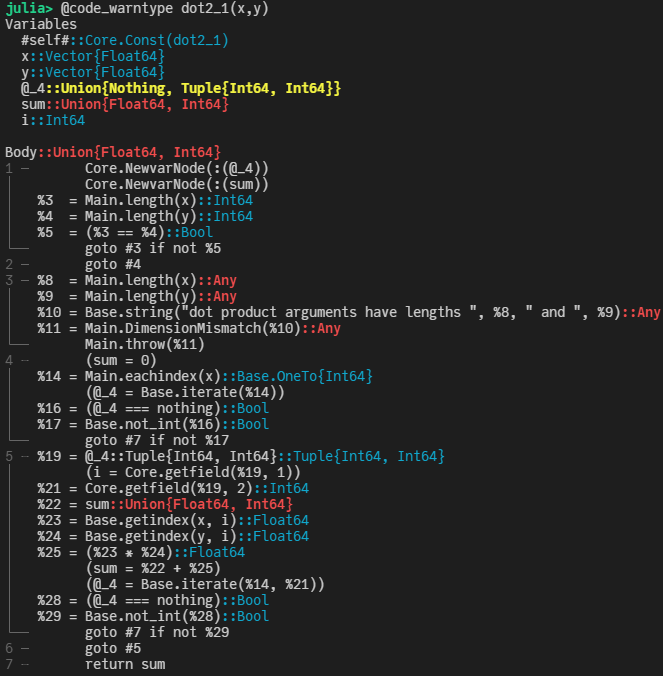

如何在Julia中计算点积?
回字有几种写法? 🤔
两个向量$\vec{a} = [a_1, a_2, ..., a_n]$ 和 $\vec{b} = [b_1, b_2, ..., b_n]$ 之间点积（dot product)的代数定义如下：
\[\vec{a} \cdot \vec{b} = \sum^n_{i=1} a_i b_i = a_1 b_1 + a_2 b_2 + ... + a_n b_n\]
那么，如何在Julia中快速计算点积呢？
版本1： 使用 LinearAlgebra 标准库中的 dot 函数
julia> using LinearAlgebra
julia> N = 1024*1024
1048576
julia> x, y = rand(N), rand(N);
julia> dot(x,y)
262311.47579656926
先测试下标准库里 dot 的性能：
julia> using BenchmarkTools
julia> @benchmark dot($(rand(N)), $(rand(N)))
BenchmarkTools.Trial: 10000 samples with 1 evaluation.
Range (min … max): 244.474 μs … 43.973 ms ┊ GC (min … max): 0.00% … 0.00%
Time (median): 252.275 μs ┊ GC (median): 0.00%
Time (mean ± σ): 314.178 μs ± 884.297 μs ┊ GC (mean ± σ): 0.00% ± 0.00%
▇█▄▃▂▁▁▁▁▁▁▁ ▁▂ ▂
████████████████▇▇▇▇▇█▇▇▇▇▇▇▇▇▆▆▅▆▇▇▅▃▅▅▄▃▄▄▃▃▄▃▅▇██▆▅▅▃▄▁▃▃▃ █
244 μs Histogram: log(frequency) by time 594 μs <
Memory estimate: 0 bytes, allocs estimate: 0.中间值位于252μs附近。
版本2： for循环
当然，即使不使用自带的dot函数，我们也可以很方便地用一个 for 循环来实现：
function dot2_1(x, y)
res = 0
for i in eachindex(x, y)
res += x[i] * y[i]
end
res
end写法基本和原始的数学表达式一样，那性能如何呢？
julia> @benchmark dot2_1($(rand(N)), $(rand(N)))
BenchmarkTools.Trial: 2134 samples with 1 evaluation.
Range (min … max): 2.286 ms … 2.942 ms ┊ GC (min … max): 0.00% … 0.00%
Time (median): 2.302 ms ┊ GC (median): 0.00%
Time (mean ± σ): 2.330 ms ± 56.418 μs ┊ GC (mean ± σ): 0.00% ± 0.00%
█ █
█▃█▇▃▃▃▃▃▃▃▃▃▃▄▃▃▃▃▃▃▃▃▃▂▂▂▂▂▂▂▂▂▂▂▂▂▁▂▂▂▂▁▁▁▂▂▁▁▁▁▂▂▂▂▂▁▂ ▃
2.29 ms Histogram: frequency by time 2.6 ms <
Memory estimate: 0 bytes, allocs estimate: 0.呃， 耗时差不多是原来的9倍了。有点不可思议，那怎么优化下呢？ 先用 @code_warntype 看下：

注意到上面标红色的部分，这是提醒我们上面的实现中出现了类型不稳定的情况。主要原因是res在dot2_1函数中，初始化成了Int64类型的0，而我们的输入是两个Vector{Float64}类型的向量。了解这一点之后，可以把上面的实现写得更灵活一些：
function dot2_2(x::AbstractArray{X}, y::AbstractArray{Y}) where {X,Y}
res = zero(promote_type(X,Y))
for i in eachindex(x, y)
res += x[i] * y[i]
end
res
end这里， 通过 promote_type 获取类型信息。
julia> @benchmark dot2_2($(rand(N)), $(rand(N)))
BenchmarkTools.Trial: 3384 samples with 1 evaluation.
Range (min … max): 1.410 ms … 3.580 ms ┊ GC (min … max): 0.00% … 0.00%
Time (median): 1.449 ms ┊ GC (median): 0.00%
Time (mean ± σ): 1.464 ms ± 66.969 μs ┊ GC (mean ± σ): 0.00% ± 0.00%
▆ ▃█ ▄
▂▃▃▃▅█▆██████▇▅█▄▄▄▄▄▄▄▃▄▄▄▃▄▄▄▄▄▃▃▄▃▃▃▂▃▃▃▂▂▃▂▂▂▂▂▁▂▂▂▂▂▂ ▃
1.41 ms Histogram: frequency by time 1.59 ms <
Memory estimate: 0 bytes, allocs estimate: 0.可以看到，比之前稍好了一些，大约是之前的5倍左右。 当然，我们还可以顺手做些进一步的优化，加上@simd并去掉边界检查：
function dot2_3(x::AbstractArray{X}, y::AbstractArray{Y}) where {X,Y}
res = zero(promote_type(X,Y))
@inbounds @simd for i in eachindex(x, y)
res += x[i] * y[i]
end
res
endjulia> @benchmark dot2_3($(rand(N)), $(rand(N)))
BenchmarkTools.Trial: 5545 samples with 1 evaluation.
Range (min … max): 848.684 μs … 1.296 ms ┊ GC (min … max): 0.00% … 0.00%
Time (median): 871.641 μs ┊ GC (median): 0.00%
Time (mean ± σ): 888.964 μs ± 50.935 μs ┊ GC (mean ± σ): 0.00% ± 0.00%
▂▇█▇▆▇▆▅▅▅▄▄▃▃▃▂▂▁▂▁▁▁ ▂
███████████████████████▇▇▇▇▇▆▆▅▅▆▆▇█▇▇████▇█▇▅▇▇▅▅▅▄▄▅▅▅▅▅▄▃ █
849 μs Histogram: log(frequency) by time 1.11 ms <
Memory estimate: 0 bytes, allocs estimate: 0.这样差距进一步缩小了一些。当然，我们还可以进一步利用 LoopVectorization.jl 这个库来提速：
using LoopVectorization
function dot2_4(x::AbstractArray{X}, y::AbstractArray{Y}) where {X,Y}
res = zero(promote_type(X,Y))
@turbo for i in eachindex(x, y)
res += x[i] * y[i]
end
res
endjulia> @benchmark dot2_4($(rand(N)), $(rand(N)))
BenchmarkTools.Trial: 5905 samples with 1 evaluation.
Range (min … max): 802.618 μs … 1.211 ms ┊ GC (min … max): 0.00% … 0.00%
Time (median): 820.607 μs ┊ GC (median): 0.00%
Time (mean ± σ): 832.880 μs ± 39.868 μs ┊ GC (mean ± σ): 0.00% ± 0.00%
▂█▄
▂███▆▆▇▅▄▃▃▃▃▃▂▂▂▂▂▁▁▁▁▁▁▁▁▁▁▁▁▁▁▁▁▁▁▁▁▁▁▁▁▁▁▁▁▁▁▁▁▁▁▁▁▁▁▁▁▁ ▂
803 μs Histogram: frequency by time 1.02 ms <
Memory estimate: 0 bytes, allocs estimate: 0.看起来稍微快了一些，不过似乎仍然与LinearAlgebra中的性能有3倍多的性能差距？其实不然，LinearAlgebra中使用了BLAS，而其默认是有多线程加速的，为了公平比较，可以将其线程数设置为1，然后对比：
julia> LinearAlgebra.BLAS.set_num_threads(1)
julia> @benchmark dot($(rand(N)), $(rand(N)))
BenchmarkTools.Trial: 5980 samples with 1 evaluation.
Range (min … max): 795.374 μs … 1.104 ms ┊ GC (min … max): 0.00% … 0.00%
Time (median): 811.659 μs ┊ GC (median): 0.00%
Time (mean ± σ): 823.303 μs ± 37.397 μs ┊ GC (mean ± σ): 0.00% ± 0.00%
▅█
▃███▅▇▇▅▅▄▄▄▄▃▃▃▃▃▂▂▂▂▂▂▂▂▂▂▂▂▂▂▂▂▂▂▁▂▂▂▂▂▂▂▂▂▂▂▂▂▂▂▂▂▂▂▂▂▂▂ ▃
795 μs Histogram: frequency by time 1.02 ms <
Memory estimate: 0 bytes, allocs estimate: 0.可以看到，二者相差无几。
版本3： 一行代码
当然，有的时候其实对性能也不是那么关心，反而代码的简洁性更重要，那么也可以简单地用一行代码来搞定：
julia> @benchmark sum(a*b for (a,b) in zip($(rand(N)),$(rand(N))))
BenchmarkTools.Trial: 3823 samples with 1 evaluation.
Range (min … max): 1.232 ms … 1.840 ms ┊ GC (min … max): 0.00% … 0.00%
Time (median): 1.281 ms ┊ GC (median): 0.00%
Time (mean ± σ): 1.295 ms ± 54.505 μs ┊ GC (mean ± σ): 0.00% ± 0.00%
▃█▇▄▆▂
▃███████▆▇▄▄▄▅▅▄▅▄▅▆▆▆▅▅▆▇▆▆▆▄▄▃▃▂▂▂▂▂▂▂▂▂▂▂▂▂▂▁▁▁▁▁▁▁▁▁▁▁ ▃
1.23 ms Histogram: frequency by time 1.46 ms <
Memory estimate: 0 bytes, allocs estimate: 0.或者，直接用 mapreduce:
mapreduce(*, +, x, y)版本4： 多线程
受前面LinearAlgebra中多线程的启发，我们同样也可以用Julia自带的多线程完成点积的计算。不过需要记得在启动Julia的时候，通过 -t auto 来指定线程数。
julia> using Base.Threads
julia> nthreads()
4这里我本机就4个线程。所以
function dot4_1(x::AbstractArray{X}, y::AbstractArray{Y}) where {X,Y}
res = zero(promote_type(X,Y))
@threads for i in eachindex(x, y)
res += x[i] * y[i]
end
res
endjulia> @benchmark dot4_1($(rand(N)), $(rand(N)))
BenchmarkTools.Trial: 109 samples with 1 evaluation.
Range (min … max): 28.586 ms … 113.851 ms ┊ GC (min … max): 0.00% … 62.77%
Time (median): 39.838 ms ┊ GC (median): 0.00%
Time (mean ± σ): 45.888 ms ± 20.565 ms ┊ GC (mean ± σ): 14.59% ± 19.04%
▁ █▃
▇█▄█▆▁▁▇██▆▇▄▄▄▁▁▁▁▁▆▁▁▁▁▁▁▁▁▁▁▁▁▁▁▁▁▁▁▁▁▁▁▁▁▁▁▁▁▁▁▄▁▁▁▄▁█▇▄ ▄
28.6 ms Histogram: log(frequency) by time 108 ms <
Memory estimate: 32.00 MiB, allocs estimate: 2097174.这个结果就比较有意思了，由于我们的多线程实现存在race condition, 实际上得到的结果并不对，并且速度相当慢。当然，为了保证结果的正确性，可以对res加锁，但并不能带来性能上的提升。一个简单的办法是，将数据分片，每个线程做自己单独的计算，最后把多个线程的结果合并：
function dot4_2(x::AbstractArray{X}, y::AbstractArray{Y}) where {X,Y}
res = zeros(promote_type(X,Y), nthreads())
@threads for i in 1:length(x)
@inbounds res[threadid()] += x[i] * y[i]
end
sum(res)
endjulia> @benchmark dot4_2($(rand(N)), $(rand(N)))
BenchmarkTools.Trial: 10000 samples with 1 evaluation.
Range (min … max): 378.194 μs … 16.460 ms ┊ GC (min … max): 0.00% … 0.00%
Time (median): 397.990 μs ┊ GC (median): 0.00%
Time (mean ± σ): 433.403 μs ± 243.825 μs ┊ GC (mean ± σ): 0.00% ± 0.00%
▅█▆▆▆▄▂▁ ▁▁ ▁▂▂▁ ▂▃▃▂▁ ▂
██████████████▇▇███████████▇▅▆▅▅▇▅▁▃▁▃▃▁▄▁▃▁▁▅▇▄▅▃▃▄▅▄▁▄▄▆▅▄▅ █
378 μs Histogram: log(frequency) by time 878 μs <
Memory estimate: 1.98 KiB, allocs estimate: 22.这样得到的结果，相比单线程的结果要快了近3.2倍。
Julia标准库里没有提供多线程的求和操作，不过有一些第三方库提供了这类基本操作，比如ThreadsX.jl。
julia> using ThreadsX
julia> @benchmark ThreadsX.sum(a*b for (a,b) in zip($(rand(N)),$(rand(N))))
BenchmarkTools.Trial: 10000 samples with 1 evaluation.
Range (min … max): 291.519 μs … 2.023 ms ┊ GC (min … max): 0.00% … 0.00%
Time (median): 326.248 μs ┊ GC (median): 0.00%
Time (mean ± σ): 339.611 μs ± 42.828 μs ┊ GC (mean ± σ): 0.00% ± 0.00%
▃▆█▆▄▂▁
▁▂▃▅▆█████████▆▆▆▆▅▄▄▄▄▃▃▃▂▂▂▂▂▂▂▂▃▃▃▃▃▃▂▂▂▂▁▁▁▁▁▁▁▁▁▁▁▁▁▁▁▁ ▃
292 μs Histogram: frequency by time 472 μs <
Memory estimate: 17.45 KiB, allocs estimate: 249.版本5： GPU版
如果你手上正好有块GPU，不妨试试看在GPU上做点积。Julia中的CUDA.jl极大地方便了Julia语言里的GPU编程，针对点积这样的常见操作，其提供了基于cuBLAS的封装，下面来试下：
julia> using CUDA
julia> @benchmark CUDA.@sync dot($(cu(rand(N))), $(cu(rand(N))))
BenchmarkTools.Trial: 10000 samples with 1 evaluation.
Range (min … max): 26.521 μs … 68.923 μs ┊ GC (min … max): 0.00% … 0.00%
Time (median): 27.798 μs ┊ GC (median): 0.00%
Time (mean ± σ): 28.331 μs ± 1.494 μs ┊ GC (mean ± σ): 0.00% ± 0.00%
▂▁ ▃▇█▅▁ ▃▅▇▅▂ ▂▃ ▂
███▆▇████████████▇████▆▄▄▅▆▆▅▅▅▅▅▅▅▆▆▆▆▅▆▄▅▆▅▄▅▅▂▅▄▄▅▅▄▄▃▅▄ █
26.5 μs Histogram: log(frequency) by time 35.9 μs <
Memory estimate: 16 bytes, allocs estimate: 1.可以看到，其速度相当快。
不过，由于cuBLAS里的dot只针对常见的 Float32, Float64, Float16 以及对应的复数类型的GPU上的向量有实现，当输入的两个向量的元素类型不一致时，目前的CUDA.jl(v3.5.0)会fallback到CPU版本的实现，导致性能极慢：
julia> z = rand(Bool, N);
julia> cx, cz = cu(x), cu(z);
julia> @time dot(cx, cz)
┌ Warning: Performing scalar indexing on task Task (runnable) @0x00007f63cc0c0010.
│ Invocation of getindex resulted in scalar indexing of a GPU array.
│ This is typically caused by calling an iterating implementation of a method.
│ Such implementations *do not* execute on the GPU, but very slowly on the CPU,
│ and therefore are only permitted from the REPL for prototyping purposes.
│ If you did intend to index this array, annotate the caller with @allowscalar.
└ @ GPUArrays ~/.julia/packages/GPUArrays/3sW6s/src/host/indexing.jl:56
12.914170 seconds (6.29 M allocations: 1.000 GiB, 0.87% gc time)一个简单的workaround是，先把类型不同的两个向量转换成相同的类型，然后再调用dot函数：
julia> @benchmark CUDA.@sync dot($(cu(rand(N))), convert(CuArray{Float32}, $(cu(rand(Bool, N)))))
BenchmarkTools.Trial: 3968 samples with 1 evaluation.
Range (min … max): 1.073 ms … 4.408 ms ┊ GC (min … max): 0.00% … 30.06%
Time (median): 1.140 ms ┊ GC (median): 0.00%
Time (mean ± σ): 1.252 ms ± 464.709 μs ┊ GC (mean ± σ): 3.35% ± 6.05%
▂█▃ ▄▁ ▁
███▇▆██▆▄▁▁▁▁▁▁▁▁▁▁▁▁▁▁▁▁▁▁▁▁▁▁▁▁▁▁▁▁▁▁▁▁▁▁▄█▅▃▁▃▁▁▁▃▁▃▁▁▁█ █
1.07 ms Histogram: log(frequency) by time 3.85 ms <
Memory estimate: 5.00 MiB, allocs estimate: 12.相比原来的GPU版本，多出来了一次拷贝数据的时间，这显然不是我们想要的。 不过，CUDA.jl的强大之处在于，针对这类没有内置的实现，我们可以很容易地通过编写自定义的核函数来实现。
function dot5_1(x::CuArray{T1}, y::CuArray{T2}) where {T1, T2}
T = promote_type(T1, T2)
res = CuArray{T}([zero(T)])
function kernel(x, y, res)
for i in 1:length(x)
@inbounds res[] += x[i] * y[i]
end
end
@cuda kernel(x, y, res)
res[]
end自己手写核函数经常容易出现各种bug，所以首要任务是先确认我们计算的结果是正确的：
julia> isapprox(dot5_1(cx, cz), dot(cx, convert(CuArray{Float32}, cz)))
true注意这里用的是isapprox来做比较。看起来我们得到的结果是正确的，那么其性能如何呢？
julia> @benchmark CUDA.@sync dot5_1($(cu(rand(N))), $(cu(rand(Bool, N))))
BenchmarkTools.Trial: 103 samples with 1 evaluation.
Range (min … max): 48.510 ms … 54.895 ms ┊ GC (min … max): 0.00% … 0.00%
Time (median): 48.514 ms ┊ GC (median): 0.00%
Time (mean ± σ): 48.606 ms ± 657.494 μs ┊ GC (mean ± σ): 0.00% ± 0.00%
█▁
███▁▁▄▁▁▁▁▁▁▁▁▁▁▁▁▁▁▁▁▁▁▁▁▁▁▁▁▁▁▁▁▁▁▁▁▁▁▁▁▁▁▁▁▁▁▁▁▁▁▁▁▁▁▁▁▁▄ ▄
48.5 ms Histogram: log(frequency) by time 50.6 ms <
Memory estimate: 1.78 KiB, allocs estimate: 29.呃，还不如先convert了再调用自带的dot函数...... 那问题出在哪呢？其实上面的核函数只用了一个线程在计算，但是在GPU上有大量的线程可供计算，于是，可以采用上面的CPU上多线程的方法来计算：
function dot5_2(x::CuArray{T1}, y::CuArray{T2}) where {T1, T2}
T = promote_type(T1, T2)
res = CuArray{T}([zero(T)])
function kernel(x, y, res)
index = threadIdx().x
stride = blockDim().x
for i in index:stride:length(x)
@inbounds res[] += x[i] * y[i]
end
end
k = @cuda launch=false kernel(x, y, res)
config = launch_configuration(k.fun)
k(x, y, res; threads=min(length(x), config.threads))
CUDA.@allowscalar res[]
end这里在运行核函数的时候，指定了threads的个数，在核函数内部的for循环把数据根据threads切分成了不同的片段，每个thread负责计算各自的一部分。 先验证下正确性：
julia> isapprox(dot5_2(cx, cz), dot(cx, convert(CuArray{Float32}, cz)))
false等等，这里似乎犯了和前面多线程计算时候一样的错误，在往res里累积求和的时候，会存在静态条件。仔细观察可以发现，我们不用每次都往res里写入结果，只需要在每个线程内部先计算完，最后叠加上去即可，同时最后要加锁。
function dot5_3(x::CuArray{T1}, y::CuArray{T2}) where {T1, T2}
T = promote_type(T1, T2)
res = CuArray{T}([zero(T)])
function kernel(x, y, res, T)
index = threadIdx().x
stride = blockDim().x
s = zero(T)
for i in index:stride:length(x)
@inbounds s += x[i] * y[i]
end
CUDA.@atomic res[] += s
return nothing
end
k = @cuda launch=false kernel(x, y, res,T)
config = launch_configuration(k.fun)
k(x, y, res, T; threads=min(length(x), config.threads))
CUDA.@allowscalar res[]
end这里用了CUDA.@atomic来保证原子操作，同样，先确认计算的正确性：
julia> isapprox(dot(cx, cz), dot5_3(cx, cz))
true再看下速度如何：
julia> @benchmark CUDA.@sync dot5_3($(cu(rand(N))), $(cu(rand(Bool, N))))
BenchmarkTools.Trial: 10000 samples with 1 evaluation.
Range (min … max): 175.298 μs … 448.774 μs ┊ GC (min … max): 0.00% … 0.00%
Time (median): 178.373 μs ┊ GC (median): 0.00%
Time (mean ± σ): 179.218 μs ± 4.301 μs ┊ GC (mean ± σ): 0.00% ± 0.00%
▁▃▅▅▇█████▇▇▇▇▇▆▆▅▅▄▄▃▂▂▁▁▁▁ ▁ ▁▁▁▁▁ ▁▁▁▁▁▁▁ ▃
▅▅██████████████████████████████████████████████▇██▇▇▆▇▆▅▅▇▅▆ █
175 μs Histogram: log(frequency) by time 191 μs <
Memory estimate: 2.16 KiB, allocs estimate: 39.还不错，至少比CPU版本快了，但是离CUBLAS版本的性能还有一定差距。
考虑到一块GPU中，还会有多个block，而上面我们才用了其中的一个block，显然还有很大的优化空间！
一个基本思路是，根据输入的数据，分配多个block，在每个block的数据区块中，按thread再切分一次，每个thread计算自己所属的数据的点积之和。
function dot5_4(x::CuArray{T1}, y::CuArray{T2}) where {T1, T2}
T = promote_type(T1, T2)
res = CuArray{T}([zero(T)])
function kernel(x, y, res, T)
index = threadIdx().x
thread_stride = blockDim().x
block_stride = (length(x)-1) ÷ gridDim().x + 1
start = (blockIdx().x - 1) * block_stride + 1
stop = blockIdx().x * block_stride
s = zero(T)
for i in start-1+index:thread_stride:stop
@inbounds s += x[i] * y[i]
end
CUDA.@atomic res[] += s
return nothing
end
k = @cuda launch=false kernel(x, y, res,T)
config = launch_configuration(k.fun)
k(x, y, res, T; threads=min(length(x), config.threads), blocks=config.blocks)
CUDA.@allowscalar res[]
endjulia> isapprox(dot(cx, cz), dot5_4(cx, cz))
true
julia> @benchmark CUDA.@sync dot5_4($(cu(rand(N))), $(cu(rand(Bool, N))))
BenchmarkTools.Trial: 10000 samples with 1 evaluation.
Range (min … max): 134.011 μs … 383.172 μs ┊ GC (min … max): 0.00% … 0.00%
Time (median): 134.933 μs ┊ GC (median): 0.00%
Time (mean ± σ): 135.095 μs ± 2.723 μs ┊ GC (mean ± σ): 0.00% ± 0.00%
▁▃▄▇▇▇▆████▇▆▃▃▁
▂▂▃▅▆█████████████████▆▅▅▅▄▃▃▃▃▃▂▂▂▂▂▂▂▂▂▂▂▂▂▂▂▂▂▂▂▂▂▂▂▂▁▂▂▂▂ ▄
134 μs Histogram: frequency by time 138 μs <
Memory estimate: 2.16 KiB, allocs estimate: 39.OK, 看起来稍微快了一些。需要注意的是，前面我们直接将每个thread计算的结果往一个res对象中通过加锁叠加上去了，这样导致每个block中每个thread都会卡在原子操作那一步。 一种优化方式是每个block的内部，先把各个thread的计算结果缓存起来，等一个block内所有thread都计算出来了同步一下，然后内部先reduce，最后再通过原子操作同步到最终的结果上。
function dot5_5(x::CuArray{T1}, y::CuArray{T2}) where {T1, T2}
T = promote_type(T1, T2)
res = CuArray{T}([zero(T)])
function kernel(x, y, res, T)
index = threadIdx().x
thread_stride = blockDim().x
block_stride = (length(x)-1) ÷ gridDim().x + 1
start = (blockIdx().x - 1) * block_stride + 1
stop = blockIdx().x * block_stride
cache = CuDynamicSharedArray(T, (thread_stride,))
for i in start-1+index:thread_stride:stop
@inbounds cache[index] += x[i] * y[i]
end
sync_threads()
if index == 1
s = zero(T)
for i in 1:thread_stride
s += cache[i]
end
CUDA.@atomic res[] += s
end
return nothing
end
k = @cuda launch=false kernel(x, y, res,T)
config = launch_configuration(k.fun; shmem=(threads) -> threads*sizeof(T))
threads = min(length(x), config.threads)
blocks = config.blocks
k(x, y, res, T; threads=threads, blocks=config.blocks, shmem=threads*sizeof(T))
CUDA.@allowscalar res[]
endjulia> isapprox(dot(cx, cz), dot5_5(cx, cz))
true
julia> @benchmark CUDA.@sync dot5_5($(cu(rand(N))), $(cu(rand(Bool, N))))
BenchmarkTools.Trial: 10000 samples with 1 evaluation.
Range (min … max): 54.364 μs … 358.597 μs ┊ GC (min … max): 0.00% … 0.00%
Time (median): 55.217 μs ┊ GC (median): 0.00%
Time (mean ± σ): 55.559 μs ± 4.023 μs ┊ GC (mean ± σ): 0.00% ± 0.00%
▄▇█▇▅▃▂
▂▄█████████▇▇▆▅▄▄▃▃▃▃▃▃▂▂▂▂▂▂▂▂▂▂▂▂▂▂▂▂▂▂▂▂▂▂▂▂▂▂▂▂▂▂▂▂▂▁▂▁▂ ▃
54.4 μs Histogram: frequency by time 61.3 μs <
Memory estimate: 2.33 KiB, allocs estimate: 43.可以看到,其性能跟CUBLAS比较接近了。当然，上面的代码还可以进一步优化，上面最后reduce的时候，只有index为1的线程在运行，其实可以多个线程一起工作：
using CUDA:i32
function dot5_6(x::CuArray{T1}, y::CuArray{T2}) where {T1, T2}
T = promote_type(T1, T2)
res = CuArray{T}([zero(T)])
function kernel(x, y, res, T)
index = threadIdx().x
thread_stride = blockDim().x
block_stride = (length(x)-1i32) ÷ gridDim().x + 1i32
start = (blockIdx().x - 1i32) * block_stride + 1i32
stop = blockIdx().x * block_stride
cache = CuDynamicSharedArray(T, (thread_stride,))
for i in start-1i32+index:thread_stride:stop
@inbounds cache[index] += x[i] * y[i]
end
sync_threads()
mid = thread_stride
while true
mid = (mid - 1i32) ÷ 2i32 + 1i32
if index <= mid
@inbounds cache[index] += cache[index+mid]
end
sync_threads()
mid == 1i32 && break
end
if index == 1i32
CUDA.@atomic res[] += cache[1]
end
return nothing
end
k = @cuda launch=false kernel(x, y, res,T)
config = launch_configuration(k.fun; shmem=(threads) -> threads*sizeof(T))
threads = min(length(x), config.threads)
blocks = config.blocks
k(x, y, res, T; threads=threads, blocks=config.blocks, shmem=threads*sizeof(T))
CUDA.@allowscalar res[]
endjulia> isapprox(dot(cx, cz), dot5_6(cx, cz))
true
julia> @benchmark CUDA.@sync dot5_6($(cu(rand(N))), $(cu(rand(Bool, N))))
BenchmarkTools.Trial: 10000 samples with 1 evaluation.
Range (min … max): 22.520 μs … 375.954 μs ┊ GC (min … max): 0.00% … 0.00%
Time (median): 23.475 μs ┊ GC (median): 0.00%
Time (mean ± σ): 23.762 μs ± 3.748 μs ┊ GC (mean ± σ): 0.00% ± 0.00%
▁▅██▆▃▁
▂▂▃▃▄▆███████▇▅▄▅▅▅▆▅▄▄▃▃▃▂▂▂▂▂▂▂▂▂▁▂▂▁▂▂▂▂▂▂▂▂▁▂▂▂▂▂▂▂▂▁▂▂▂ ▃
22.5 μs Histogram: frequency by time 28 μs <
Memory estimate: 2.16 KiB, allocs estimate: 39.这样，最终的结果跟CUBLAS的性能基本一致了。
从代码层面上讲，上面的代码还可以进一步简化下，上面的while循环其实是一个经典的reduce操作，而CUDA.jl中内置了一个函数reduce_block来简化该操作，下面是简化后的核函数写法：
function kernel(x, y, res::AbstractArray{T}, shuffle) where {T}
local_val = zero(T)
# grid-stride loop
i = threadIdx().x + (blockIdx().x - 1i32)*blockDim().x
while i <= length(x)
@inbounds local_val += dot(x[i], y[i])
i += blockDim().x * gridDim().x
end
val = reduce_block(+, local_val, zero(T), shuffle)
if threadIdx().x == 1i32
# NOTE: introduces nondeterminism
@inbounds @atomic res[] += val
end
return
end忘了说了，如果你还是one-line solution的爱好者，其实之前的CPU版本的写法在GPU上同样work哦~
mapreduce((x,y)->dot(x, y), +, x, y)